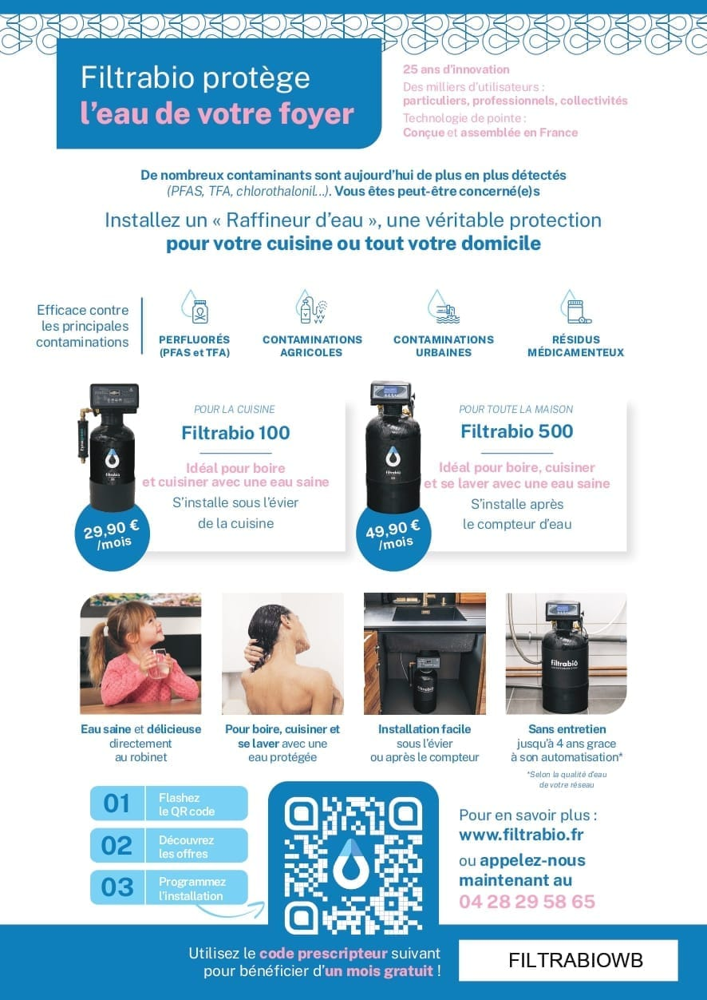
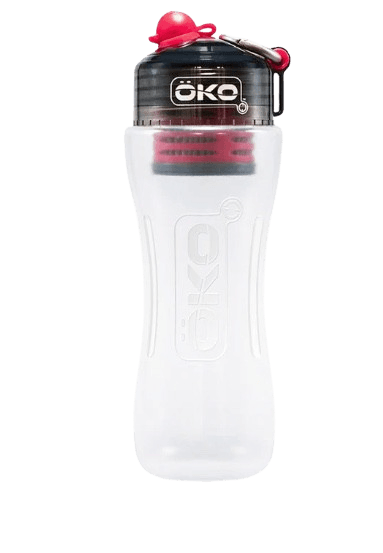

Pour la cuisine
Louer votre purificateur d'eau : 1er mois offert avec le code promotionnel FILTRABIOWB, puis à partir de 29,90 €/mois, sans engagement.
Louer maintenantProtégez votre bien-être et celui de votre famille avec nos systèmes de purification d'eau de pointe.
L'eau du robinet peut sembler pure, mais elle cache souvent des contaminants dangereux : pesticides, métaux lourds, PFAS, microplastiques, et plus encore.
Nos médias en parlent de manière concrète depuis de nombreuses années.
L'eau en bouteille, loin d'être une alternative, contient également des polluants, y compris des microplastiques et parfois même des bactéries comme l'E. coli.
Nos médias parlent de la problématique des microplastiques et des autres polluants retrouvés dans les bouteilles d'eau minérales en PET.

Les canalisations sont obsolètes puisqu'elles doivent être changées depuis des dizaines d'années, relarguant leurs particules néfastes à nos robinets.

Les stations d'épuration ne sont pas équipées pour filtrer des contaminants comme les pesticides, les métaux lourds, les PFAS, les traces de plastiques, les traces de médicaments,...
Utilisez le code FILTRABIOWB pour commencer.
Louer votre purificateur d'eau : 1er mois offert avec le code promotionnel FILTRABIOWB, puis à partir de 29,90 €/mois, sans engagement.
Louer maintenantLouer votre purificateur d'eau : 1er mois offert avec le code promotionnel FILTRABIOWB, puis à partir de 49,90 €/mois, sans engagement.
Louer maintenantTransparence : Wilfrid Bergé est apporteur d'affaires de Filtrabio et peut être rémunéré si vous souscrivez ou achetez via les liens de cette page. La location est conclue directement avec Filtrabio, aux conditions de Filtrabio.
Wilfrid Bergé, expert multi-activités, vous aide à choisir la meilleure solution de filtration d'eau adaptée à vos besoins, à un prix abordable.
Louer maintenant pour une eau plus saine chez vous !


La gourde est équipée d'un filtre breveté développé initialement par la NASA pour rendre l'eau non-potable en une eau parfaitement potable. Utilisable partout, elle est idéale pour tous vos déplacements (sport, voyage, randonnée, travail etc etc), en plus de chez vous, au robinet !
Acheter une gourdeLien partenaire : Wilfrid Bergé peut être rémunéré en cas d'achat.
Source : brochure « Analyses et certifications » des raffineurs d'eau Filtrabio (2023). Cliquez sur une page pour l'agrandir.